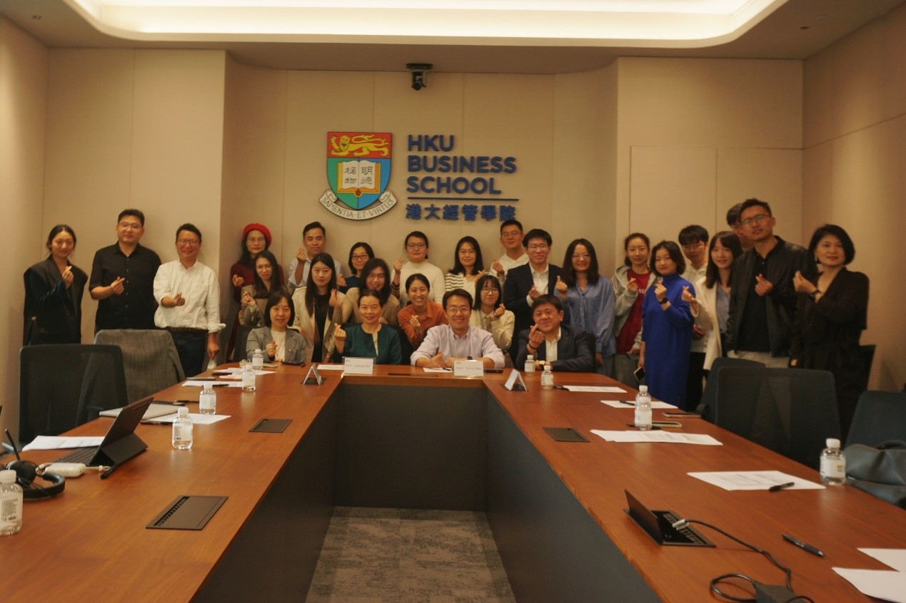

Overview
Digital platforms are vital to society's economic growth and resilience and have largely changed the way people live. They facilitate transactions and match participants by leveraging information technology and network effects, playing a dominant role in modern business practice. Many new digital platforms are created, by start-up firms or industry incumbents, but most of them do not survive through the early stage.This Project is dedicated to a comprehensive and timely investigation of how digital platforms can rapidly grow their user base and expand revenue at the early stage, and how they can support their complementors to thrive on both traditional and social e-commerce platforms.
Research Objectives
PO1. The Platform Perspective
- Investigate how digital platforms can rapidly grow the user base at the platform’s early stage through competitive actions and legitimation efforts.
- Investigate how digital platforms can rapidly grow revenue at the platform’s early stage through platform-enabled operation management.
- Application: Design and launch a LawTech platform.
PO2. The E-Commerce Complementor Perspective
- Investigate how digital platform complementors can improve performance by
- configuring platform-based competitive actions as a repertoire.
- differentiating platform-based competitive action repertoire from rivals.
- adapting platform-enabled competitive action repertoire over time.
- changing the platform feature of the online store location.
PO3. The Social E-Commerce Complementor Perspective
- Investigate how social media influencers leverage social platform ecosystems for content creation and product selection for better performance.
- The role of one-stop e-commerce service platforms in facilitating product development/selection and content creation, guiding, and maintaining a virtuous cycle.
- Comparing and analyzing the optimal operation model and fee model of the platforms.
Team
-
Prof. Yulin Fang (PI)
Professor; Director, Institute of Digital Economy and Innovation
research interest or publications research interest or publications -
Prof. Junhong Chu (CoPI)
Professor; Associate Director, Centre for Innovation and Entrepreneurship
research interest or publications research interest or publications -
Prof. Yulin Fang (PI)
Professor; Director, Institute of Digital Economy and Innovation
research interest or publications research interest or publications -
Prof. Junhong Chu (CoPI)
Professor; Associate Director, Centre for Innovation and Entrepreneurship
research interest or publications research interest or publications
Publications
Attaining Individual Creativity and Performance in Multi-Disciplinary and Geographically-Distributed IT Project Teams: The Role of Transactive Memory Systems
He, Wei; Po-An, J. J.; Schroeder, Andreas; and Fang, Yulin. 2022. MIS Quarterly, (46: 2) pp.1035-1072.
Attaining Individual Creativity and Performance in Multi-Disciplinary and Geographically-Distributed IT Project Teams: The Role of Transactive Memory Systems
He, Wei; Po-An, J. J.; Schroeder, Andreas; and Fang, Yulin. 2022. MIS Quarterly, (46: 2) pp.1035-1072.
Events
香港大学经管学院深圳校区成功举办数字平台与创业研讨会
12月1-2日在香港大学经管学院深圳校区成功举办了「数字平台与创业」研讨会。这次研讨会由香港大学经管学院的数字经济研究所主办，并邀请了来自香港、澳门以及内地众多高校的专家和学者参与。研讨会的主题集中在数字平台的发展和面临的问题，并探讨了数字经济时代的未来趋势和发展。


Contact
Address：深圳市福田区鹏程一路9号广电金融中心主楼4~5层Postcode：518034
E-mail：ylfang@hku.hk
©2023 香港大学商学院 版权所有
粤ICP备2023062572号